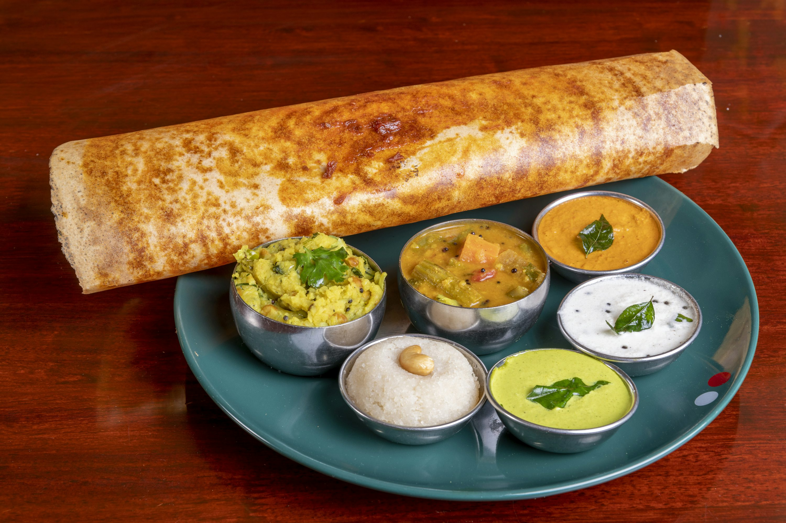

Ingredients:
- 1 cup rice
- ½ cup urad dal
- ½ tsp fenugreek seeds
- Water
- Salt to taste

Instructions:
- Soak rice and urad dal for 4-6 hours.
- Grind the mixture to a smooth batter and ferment overnight.
- Heat a pan, pour the batter, and spread it into a thin circle.
- Cook until golden brown and serve with chutney and sambar.